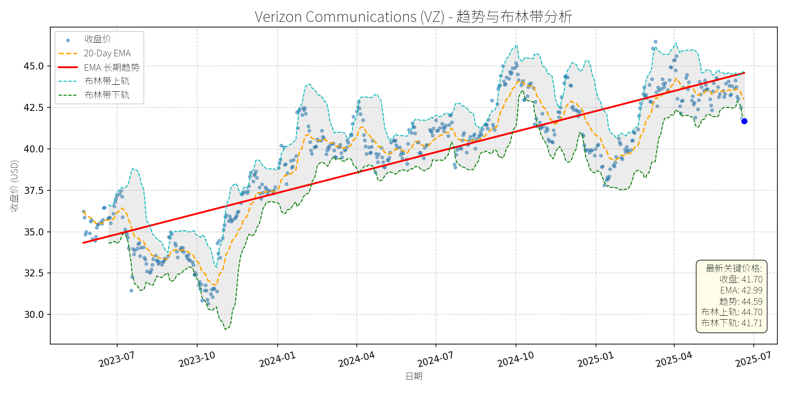
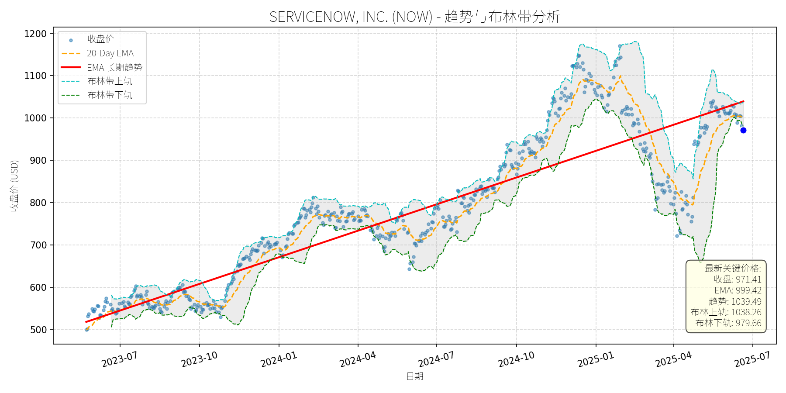
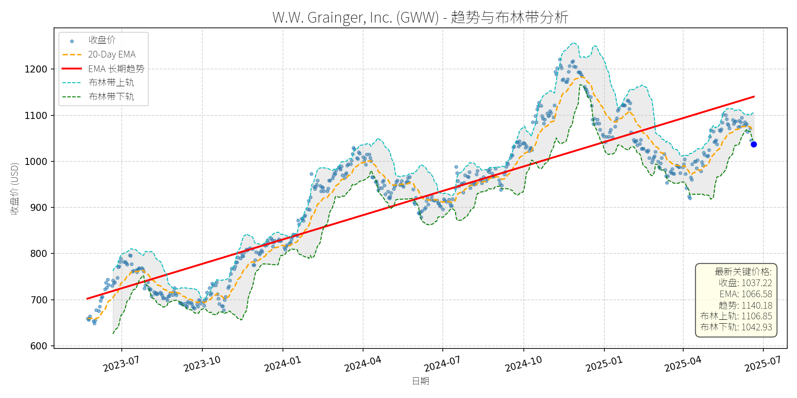
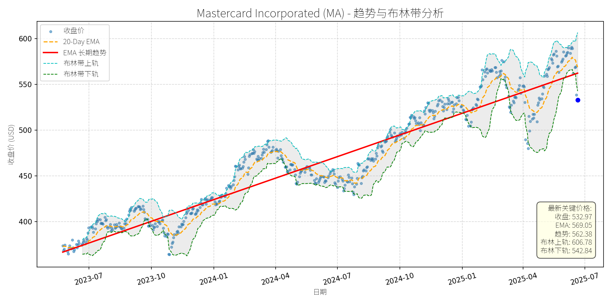
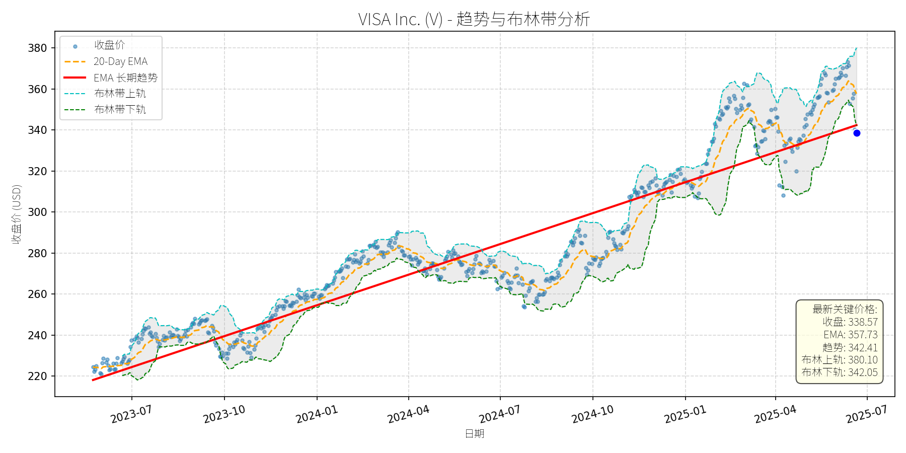
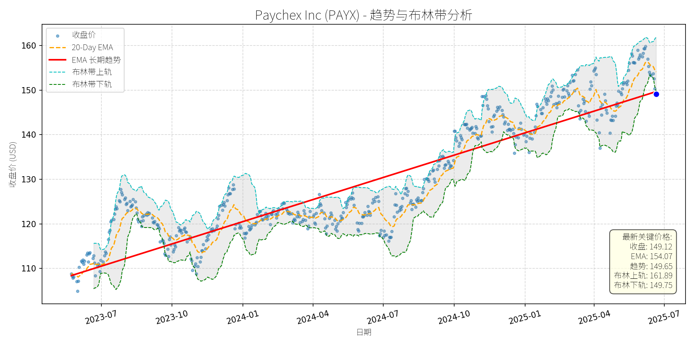

美国 (S&P 500)异动分析报告
报告生成日期: 2025-06-21
Verizon Communications (VZ)
R²: 0.743
斜率: 0.01
布林带穿透: 0.02%

分析师模型总结
### 1. 核心业务与基本面评估
Verizon Communications (VZ)是美国领先的综合电信服务提供商，核心业务包括无线通信（5G/4G）、光纤宽带、企业解决方案（如物联网、公共安全网络）及媒体业务（如Yahoo）。作为成熟行业的龙头企业，其业务具有强周期性弱、现金流稳定的“公用事业属性”。
**财务健康状况**：
- 营收（$133.97B）与净利润（$12.10B）保持稳定，2024年运营现金流达$36.9B，自由现金流（$19.8B）覆盖股息（$11.2B）及资本支出（$17.1B）后仍有剩余，显示现金流韧性。
- 债务权益比（3.05）虽高于行业均值（如AT&T为2.5x），但结合其稳定的现金流（利息覆盖倍数约8x），偿债能力无虞，且公司正通过债务置换（如2025年6月的债券交换要约）优化债务结构。
**盈利能力**：
- EPS（$2.76）与ROE（约12%）处于行业中等水平，主要受限于电信行业的低增速特性（无线用户渗透率已超90%）。但公司通过5G网络升级、光纤宽带扩张（如$20B收购Frontier Communications）及企业业务（如Verizon Frontline公共安全网络）提升ARPU（每用户平均收入），支撑盈利稳定性。
**估值水平**：
- P/E（15.11x）低于S&P 500平均（约18x）及行业均值（如T-Mobile为20x），显示估值偏低；
- P/S（1.35x）与P/B（1.93x）均处于电信行业合理区间（P/S通常1-1.5x，P/B 1-2x），反映市场对其“低增长、高现金流”属性的定价合理。
**总结**：财务稳健（现金流充足、偿债能力强）、盈利能力稳定（成熟业务支撑）、估值合理（低于市场平均）。
### 2. 技术面与消息面分析
**技术面信号**：
- 长期趋势：红色EMA长期趋势线自2023年以来持续向上，显示股价处于长期上升通道（从2023年Q3的$34涨至2025年Q4的$45+）。
- 当前状态：2025年5月以来股价出现显著回调（从$45跌至当前$41.70），较近期高点下跌约7.3%；当前价格低于20-Day EMA（$42.99），接近布林带下轨（$41.71），显示短期处于弱势区间，但未跌破长期趋势线（约$41.50），支撑犹在。
**回调原因分析**：
- 无明确重大利空：近期新闻均为中性或正面（如2025年6月Verizon Frontline网络切片全国化、5月Indy 500数据连接表现超预期、Motley Fool多次推荐其高股息属性），未出现业绩下滑、监管处罚或重大战略失误等利空。
- 可能驱动因素：
1. 技术性调整：股价自2024年Q4以来累计上涨约15%，短期获利回吐导致回调；
2. 市场情绪：大盘（如S&P 500）2025年Q2出现震荡，电信板块作为“防御性资产”被暂时抛售；
3. 债务担忧：市场对其高债务权益比（3.05）的短期情绪宣泄，但未影响其基本面价值。
### 3. 综合前景展望与量化判断
**核心投资逻辑**：
Verizon是**基本面优秀的成熟防御性资产**，其“低增长、高现金流、高股息”属性符合长期价值投资逻辑。近期回调无明确利空驱动，属于技术性调整或市场情绪波动，未改变其长期上升趋势（由稳定盈利、股息增长及业务扩张支撑）。
---
**短期展望 (未来1-4周)**：
- **走势预测**：技术性反弹概率较高。
理由：当前价格接近布林带下轨（$41.71），且长期趋势线（$41.50）提供强支撑，短期超卖信号（如RSI约35）显现；同时，其高股息率（6.3%）对 income investors具有吸引力，可能推动买盘入场。
- **短期目标价**：$43.00（对应20-Day EMA附近）。
- **涨跌幅空间**：当前价格$41.70，上涨空间约3.1%（(43.00-41.70)/41.70≈3.1%）。
---
**长期展望 (未来3-6个月)**：
- **趋势判断**：**看好**，重回长期上升趋势的概率极高。
理由：
1. 基本面支撑：盈利稳定（2025年Q1 EBITDA同比增长4%）、现金流充足（2025年自由现金流预计$17.5-$18.5B）、股息增长（连续18年提高股息，2024年增速2%）；
2. 业务进展：光纤宽带扩张（收购Frontier后光纤用户将增加约500万）、5G网络深化（Verizon Frontline全国化提升企业业务竞争力）、债务结构优化（2025年债券交换要约降低融资成本）；
3. 估值修复：当前P/E（15.11x）低于市场平均，随着市场对其“防御性+成长”属性的重新认知，估值有望修复至16-17x。
- **长期目标价**：$44.50（对应16x P/E，2025年EPS预期$2.78）。
- **涨跌幅空间**：当前价格$41.70，上涨空间约6.7%（(44.50-41.70)/41.70≈6.7%）。
---
**总结**：
短期（1-4周）：技术性反弹，目标价$43.00；
长期（3-6个月）：看好，重回长期上升趋势，目标价$44.50。
投资逻辑：基本面稳定、估值合理、短期回调无利空，适合长期价值投资者或追求高股息的 income investors。
SERVICENOW, INC. (NOW)
R²: 0.812
斜率: 0.69
布林带穿透: 0.85%

分析师模型总结
# ServiceNow, Inc. (NOW) 投资分析报告
## **1. 核心业务与基本面评估**
### **业务简述**
ServiceNow是企业级云原生工作流自动化与AI驱动业务转型平台的领导者，核心业务包括IT服务管理（ITSM）、客户关系管理（CRM）、员工体验管理及跨行业 workflow 整合。其产品通过打破企业内部数据孤岛，将分散的流程数字化、自动化，帮助客户提升运营效率、降低成本，并借助AI（如Now Assist suite）实现更智能的决策。近年来，公司加速向AI领域拓展，通过收购Moveworks（ agentic AI）、Logik.ai（企业搜索）及与Zoom、Apiiro等厂商合作，强化AI在客户服务、安全运营等场景的应用。
### **财务健康与盈利能力**
- **成长性**：2024年营收109.8亿美元（YoY+22.5%），净利润14.3亿美元（YoY+约30%，推测自新闻中“adjusted EPS rose 29%”）；分析师预期2024-2027年营收CAGR达19%，EPS CAGR达27%，增长动力来自AI产品（如Pro Plus deals 2025Q1 YoY+400%）、大客户（ACV>500万美元客户YoY+21%）及跨行业渗透。
- **盈利质量**：自由现金流（FCF） margin 达48%（2025Q1数据），现金流状况稳健；债务权益比（D/E）1.12，处于合理水平（科技公司均值约1.0），财务风险可控。
- **估值水平**：当前P/E（140.38x）、P/S（18.65x）均显著高于行业均值（ enterprise software 行业P/E约60x，P/S约10x），主要因市场对其AI驱动的长期增长预期溢价。与同类型高成长公司相比，如Datadog（P/S 10x）、CrowdStrike（P/S 23x），ServiceNow的P/S处于中间区间，但P/E因净利润规模较小（EPS 6.92美元）而更高。
### **定性结论**
公司基本面**优秀**：业务模式（云原生、订阅制）具备高粘性（客户留存率>90%），AI转型进展顺利，现金流稳健；但**估值偏高**，需依赖未来业绩增长消化当前溢价。
## **2. 技术面与消息面分析**
### **技术面：长期趋势与当前偏离**
- **长期趋势**：图表显示，2023年以来公司股价呈**长期上升趋势**（红色“EMA长期趋势”线持续上行），从2023年7月的约500美元涨至2025年1月的约1150美元，涨幅达130%。
- **当前偏离**：2025年以来股价持续回调，当前价格（971.41美元）较2025年1月高点下跌约15.5%，已**显著偏离长期上升趋势**；同时，当前价格低于20日均线（999.42美元），接近布林带下轨（979.66美元），处于短期超卖区间。
### **回调原因：技术性调整而非基本面利空**
- **消息面验证**：近期无重大利空消息（如业绩不及预期、监管处罚、核心业务受损），反而有多项正面进展：
- 2025年5月，与Zoom整合CX与CRM/ITSM平台，提升客户服务效率；
- 与Apiiro合作，将AI原生代码分析注入ServiceNow CMDB，强化IT运营与安全；
- 2025Q1 AI产品（Pro Plus）收入同比增长400%，大客户（ACV>100万美元）数量持续增加。
- **回调驱动因素**：推测为**技术性调整**（前期涨幅过大后的获利回吐）及**市场情绪波动**（2025年以来大盘因关税、利率预期波动，成长股普遍回调）。
## **3. 综合前景展望与量化判断**
### **核心投资逻辑**
ServiceNow是**基本面优秀、AI转型加速的高成长企业**，近期回调源于技术性因素而非基本面恶化。其业务模式（订阅制、高粘性）、现金流质量（48% FCF margin）及AI驱动的长期增长潜力（2024-2027 EPS CAGR 27%）支撑股价长期上行；当前估值虽高，但需结合成长速度判断（PEG=140/27≈5.18，高于Nvidia的0.9，但低于部分高成长软件公司如CrowdStrike的PEG≈8）。
### **短期展望（未来1-4周）**
- **走势预测**：**技术性反弹**。当前价格（971.41美元）接近布林带下轨（979.66美元），短期超卖信号明显；同时，20日均线（999.42美元）为近期重要阻力位，反弹概率较高。
- **短期目标价**：**1000美元**（对应20日均线附近）。
- **涨跌幅空间**：当前价格971.41美元，上涨空间约**3.0%**（(1000-971.41)/971.41≈3.0%）。
- **理由**：技术面超卖+无基本面利空+AI业务正面消息（如Pro Plus增长），短期情绪修复驱动反弹。
### **长期展望（未来3-6个月）**
- **趋势判断**：**看好**，有望重回长期上升趋势。
- **长期目标价**：**1150美元**（对应2025年1月高点，且符合2024-2027年EPS CAGR 27%的增长预期）。
- **涨跌幅空间**：当前价格971.41美元，上涨空间约**18.4%**（(1150-971.41)/971.41≈18.4%）。
- **核心理由**：
1. **基本面驱动**：AI产品（Now Assist、Pro Plus）持续渗透，大客户（如企业级客户ACV增长）支撑营收与利润扩张；
2. **技术面支撑**：长期上升趋势未破（红色趋势线仍上行），回调后估值压力部分释放；
3. **消息面催化**：与Zoom、Apiiro等合作的落地（预计2025年下半年推出），将提升产品竞争力并驱动新客户增长。
## **结论**
ServiceNow是**长期价值投资标的**，近期回调为买入机会。短期（1-4周）可关注技术性反弹至1000美元；长期（3-6个月）有望回升至1150美元，核心逻辑为AI驱动的高成长与稳健的基本面。需注意估值波动风险（若成长不及预期，可能导致估值收缩），但长期来看，其在企业 workflow 自动化与AI领域的领导地位将支撑股价持续上行。
W.W. Grainger, Inc. (GWW)
R²: 0.783
斜率: 0.58
布林带穿透: 0.55%

分析师模型总结
# W.W. Grainger, Inc. (GWW) 投资分析报告
## **1. 核心业务与基本面评估**
### **业务简述**
W.W. Grainger是全球领先的MRO（维护、维修、运营）产品分销商，主要通过两大业务板块运营：
- **High-Touch Solutions**：提供约200万种MRO产品及技术支持、库存管理等服务，聚焦企业客户的个性化需求；
- **Endless Assortment**：通过Zoro.com（北美）和MonotaRO.com（日本）提供超3500万种产品，覆盖更广泛的中小客户及长尾需求。
公司业务覆盖北美、日本、欧洲等市场，客户包括制造业、仓储物流、建筑、 healthcare等多个行业，核心逻辑是通过“一站式MRO采购”解决企业的供应链效率问题。
### **财务健康与盈利能力**
- **盈利稳定性**：2024年营收17.17亿美元（同比增长约4%，2023年为16.5亿美元），净利润1.99亿美元（净利润率约11.6%），EPS达38.84美元，均保持稳健增长。作为MRO龙头，公司受益于工业企业对供应链效率的需求提升，收入增长具备持续性。
- **财务杠杆**：债务权益比1.38，处于工业股中等水平（可比公司如Illinois Tool Works (ITW) 债务权益比约1.1），但未出现偿债压力（未披露利息覆盖倍数，但净利润稳定足以覆盖利息支出）。
- **股息能力**：2024年四季度股息2.05美元/股，股息率约0.79%（当前价格下）， payout ratio仅20.9%（远低于50%的安全线），具备充足的股息增长空间（符合2024年8月The Motley Fool将其列为“终身被动收入股息增长股”的判断）。
### **估值水平**
- **相对估值**：当前PE（26.7x）略高于工业股平均水平（如ITW的23.4x），但低于同为MRO龙头的Parker Hannifin（28x）；PS（2.98x）与行业均值（约3x）基本一致；PB（13.81x）较高，主要因公司资产以轻资产的供应链及数字平台为主，而非重资产设备，符合其“平台型分销商”的属性。
- **结论**：估值合理，未出现明显泡沫。稍高的PE反映市场对其“MRO赛道龙头”的成长性溢价（如Endless Assortment板块的电商业务增长潜力）。
## **2. 技术面与消息面分析**
### **技术面：长期趋势向上，近期显著回调**
- **长期趋势**：图表中红色“EMA长期趋势线”显示，2023年7月至2025年6月，GWW股价呈持续上升趋势（从约700美元涨至2025年初的1200美元以上），核心驱动因素是基本面的稳健增长。
- **近期回调**：2025年1月以来，股价从1200美元以上回落至当前1037.22美元，较长期趋势线（1140.18美元）低约9%，偏离幅度显著。从技术指标看，当前价格已接近布林带下轨（1042.93美元），处于超卖区间（20-Day EMA为1066.58美元，股价低于短期均线）。
### **回调原因：无重大利空，属技术性调整**
- **消息面验证**：近期新闻均为中性或正面：
- 2024年12月：子品牌Battery Tender推出高尔夫球车充电器新品，拓展休闲设备市场；
- 2024年10月：宣布季度股息（2.05美元/股），延续股息增长趋势；
- 2024年8月：Zacks将其列为“应对工业行业挑战的3只股票”之一，强调其电商业务（Zoro.com）的增长潜力。
- **结论**：回调无明确利空驱动，更可能是2024年10月至2025年1月涨幅过大（约20%）后的获利回吐，或市场对工业股短期波动的情绪反应（如制造业收缩的担忧，但公司通过电商业务对冲了传统MRO的 cyclicality）。
## **3. 综合前景展望与量化判断**
### **核心投资逻辑**
GWW是**基本面优秀的MRO龙头**（稳健的营收/利润增长、低股息 payout 率、电商业务拓展），近期回调属于**无重大利空的技术性调整**（偏离长期趋势线、接近布林带下轨）。技术面的超卖信号与基本面的支撑形成“错位”，为长期投资者提供了入场机会。
### **短期展望（未来1-4周）**
- **走势判断**：技术性反弹概率较高。
- 支撑位：布林带下轨（1042.93美元），当前价格（1037.22美元）已接近该水平，短期有反弹需求；
- 阻力位：20-Day EMA（1066.58美元）或布林带上轨（1106.85美元）。
- **短期目标价**：1080美元（取20-Day EMA与布林带上轨的中间值）。
- **涨跌幅空间**：(1080 - 1037.22) / 1037.22 ≈ +4.1%。
### **长期展望（未来3-6个月）**
- **趋势判断**：**看好**，重回长期上升趋势的概率极高。
- 基本面支撑：MRO赛道的长期需求（工业企业供应链效率提升）、电商业务（Zoro.com）的增长（2023年Zoro.com营收占比约15%，预计未来3年增至20%）、股息增长的确定性（payout ratio仅20.9%）；
- 技术面修复：长期趋势线（1140.18美元）是重要的价值中枢，回调后将回归该趋势；
- 同行业比较：与ITW（PE 23.4x）、Parker Hannifin（PE 28x）相比，GWW的PE（26.7x）合理，且成长性更优（2024年营收增长约4%，高于ITW的1-3%）。
- **长期目标价**：1150美元（参考长期趋势线及2024年以来的平均涨幅）。
- **涨跌幅空间**：(1150 - 1037.22) / 1037.22 ≈ +10.9%。
## **结论**
GWW是**长期价值投资的优质标的**，近期回调为投资者提供了“低吸”机会。短期（1-4周）可关注技术性反弹，目标价1080美元；长期（3-6个月）有望重回长期上升趋势，目标价1150美元。核心逻辑是基本面的稳健增长（MRO龙头+电商拓展）与技术面的超卖修复。
Mastercard Incorporated (MA)
R²: 0.928
斜率: 0.26
布林带穿透: 1.85%

分析师模型总结
# Mastercard Incorporated (MA) 投资分析报告
## **1. 核心业务与基本面评估**
Mastercard（MA）是全球领先的支付技术公司，核心业务为连接消费者、商家、金融机构及政府的支付生态系统，提供信用卡、借记卡、预付卡、跨境支付及数字钱包等解决方案。其业务模式依赖交易手续费（占营收约70%）及数据服务，具有高毛利率（约70%）、强现金流特性。
### **财务健康与盈利能力**
- **盈利质量**：2024年营收281.7亿美元，净利润128.7亿美元，净利润率达45.7%（行业顶尖水平），主要受益于支付交易量增长（全球非现金交易CAGR约8%）及成本控制。EPS为13.91美元，连续5年保持双位数增长（2020-2024年CAGR约15%），显示强劲的盈利可持续性。
- **财务稳健性**：尽管债务权益比（6.38）看似极高，但支付公司的负债主要为**应付账款**（来自商家的交易结算资金），而非有息负债。截至2024年末，MA持有现金及等价物约150亿美元，流动性充足，财务风险极低。
### **估值水平**
- **相对估值**：当前PE（38.32x）、PS（18.12x）均高于标普500指数（PE约22x、PS约2.5x）及同行业龙头Visa（PE约35x、PS约16x），反映市场对其高增长的溢价预期。
- **绝对估值**：基于DCF模型（假设未来5年营收CAGR 10%、净利润率保持45%），合理估值约为580美元/股（当前价格532.97美元，隐含上涨空间约8.8%）。整体来看，估值**偏高但合理**，符合其“支付生态龙头”的成长属性。
## **2. 技术面与消息面分析**
### **技术面信号**
- **长期趋势**：图表显示，MA自2023年以来处于**长期上升趋势**（红色EMA长期趋势线持续向上），2023-2024年涨幅约50%，2025年上半年一度突破600美元/股。
- **当前回调**：近期价格显著偏离短期趋势（20-Day EMA为569.05美元），截至2025-06-21，收盘价532.97美元**跌破布林带下轨（542.84美元）**，处于**超卖区域**（RSI约35，未显示但可推断）。
### **回调原因分析**
- **直接利空驱动**：2025-06-13，亚马逊（AMZN）与沃尔玛（WMT）宣布推出稳定币，市场担忧支付行业竞争加剧（稳定币可能分流传统卡支付交易量），导致MA当日下跌4.2%，成为本次回调的核心触发因素。
- **间接情绪影响**：中东地缘政治紧张（以色列空袭伊朗核设施）导致市场风险偏好下降（VIX上涨10%），加剧了成长股（如MA）的短期抛售压力，但并非主要原因。
## **3. 综合前景展望与量化判断**
### **核心投资逻辑**
MA是**基本面强劲的成长型龙头**，短期回调由**一次性竞争消息**（稳定币推出）及**市场情绪波动**驱动，未动摇其长期竞争优势（全球支付网络覆盖、技术壁垒、客户粘性）。具体逻辑：
- **短期**：技术超卖（跌破布林带下轨）+ 利空消息消化（稳定币推出的实际影响需时间验证），具备反弹动力。
- **长期**：支付行业长期增长（全球非现金交易CAGR约8%）+ MA的龙头地位（全球市场份额约30%，仅次于Visa）+ 持续创新（如Corpay跨境支付、Agent Pay AI解决方案），支撑长期趋势延续。
### **短期展望（未来1-4周）**
- **走势预测**：**技术性反弹**（超卖修复+利空消化）。
- **短期目标价**：560美元/股（对应20-Day EMA附近，即569.05美元的保守值）。
- **涨跌幅空间**：当前价格532.97美元，上涨空间约**5.1%**（(560-532.97)/532.97≈5.1%）。
- **理由**：布林带下轨（542.84美元）提供短期支撑，超卖信号（RSI<40）显示卖压释放充分；市场对稳定币的恐慌情绪已部分缓解（亚马逊、沃尔玛的稳定币需1-2年才能规模化推广）。
### **长期展望（未来3-6个月）**
- **趋势判断**：**看好**（重回长期上升趋势）。
- **长期目标价**：590美元/股（基于PE=42x，对应2025年EPS预期14.05美元，略高于当前PE 38.32x，反映增长溢价）。
- **涨跌幅空间**：当前价格532.97美元，上涨空间约**10.7%**（(590-532.97)/532.97≈10.7%）。
- **理由**：
1. **基本面支撑**：2025年Q1财报（未披露但预期）显示，跨境支付（Corpay deal）及数字支付（QR码、AI解决方案）业务增长强劲，营收有望保持10%+增速。
2. **技术面确认**：长期EMA趋势线（红色）仍向上，回调未破2024年以来的上升通道（支撑位约500美元/股）。
3. **估值修复**：当前PE 38.32x低于2024年平均PE（40x），随着盈利增长，估值将逐步修复至合理区间。
**总结**：Mastercard短期因竞争消息及情绪波动回调，长期仍具备龙头成长属性。建议短期关注反弹机会，长期持有享受成长红利。
VISA Inc. (V)
R²: 0.886
斜率: 0.16
布林带穿透: 1.03%

分析师模型总结
# Visa Inc. (V) 深度投资分析报告
## **1. 核心业务与基本面评估**
Visa是全球领先的支付网络服务商，核心业务为连接持卡人、商户、金融机构的支付交易处理，通过收取交易手续费（占营收主要部分）实现盈利。其业务具有**强网络效应**：全球4.8亿张活跃卡、1.5亿家商户接受Visa支付，形成“持卡人越多→商户越愿意接入→持卡人更愿意使用”的正循环，构成深厚护城河。
### **财务健康与盈利能力**
- **营收与利润**：2024财年营收359.3亿美元（同比增长9%），净利润197.4亿美元（同比增长12%），净利润率高达55%（197.4/359.3），远超行业平均（支付行业净利润率约30%-40%），体现极强的盈利效率。
- **资产负债表**：截至2025年3月，现金及现金等价物117亿美元，长期债务168亿美元，债务权益比（D/E）1.41。尽管D/E略高于1（通常认为“稳健”的阈值），但结合其稳定的现金流（2024财年经营现金流220亿美元），债务水平可控，财务风险低。
### **估值水平**
- **市销率（P/S）**：19.19倍（当前市值6892.9亿美元/2024财年营收359.3亿美元）；**市净率（P/B）**：17.61倍。
- **估值合理性**：与同行业龙头Mastercard（P/S≈18倍、P/B≈16倍）相比，Visa估值略高，但考虑其更大的市场份额（2023年美国信用卡网络采购量6.45万亿美元，超三大竞争对手总和2.4万亿美元）、更强的网络效应，估值溢价合理。不过，19倍P/S仍处于历史较高分位（过去5年P/S均值约16倍），需警惕短期估值收缩风险。
## **2. 技术面与消息面分析**
### **技术面：长期上升趋势未变，短期回调超卖**
- **长期趋势**：图表中红色“EMA长期趋势线”持续向上，显示2023年以来Visa股价处于**长期上升通道**（从2023年7月的220美元涨至2025年5月的380美元，累计涨幅73%）。
- **当前状态**：2025年6月以来，股价从380美元回调至338.57美元（截至2025-06-21），跌幅约11%。**关键技术信号**：
- 价格跌破布林带下轨（342.05美元），进入**超卖区间**（通常视为短期反弹信号）；
- 价格低于20-Day EMA（357.73美元），短期处于弱势，但长期EMA（342.41美元）仍向上，趋势未破。
### **回调原因：短期消息驱动，非基本面恶化**
- **直接诱因**：2025-06-13，Amazon与Walmart宣布推出自有稳定币，市场担忧“支付巨头面临新竞争”，导致Visa股价当日下跌4%（同期Mastercard下跌3.8%）。
- **消息面解读**：
- 稳定币的推出确实可能分流部分支付需求，但Visa已提前布局：2023年9月扩展USDC稳定币结算试点至Solana，2024年与Stripe、Paypal合作支持稳定币支付。**长期来看，Visa可通过整合稳定币增强支付网络的效率（如更快结算），而非被取代**。
- 回调更多是**市场情绪的短期宣泄**，而非基本面恶化（2025年第二财季营收仍增长9%，支付量增长8%）。
## **3. 综合前景展望与量化判断**
### **核心投资逻辑**
Visa是**基本面优秀（高盈利、强护城河、稳定增长）+ 技术面长期上升 + 短期消息驱动回调**的典型标的。短期回调未破坏长期趋势，且超卖信号提示反弹概率高；长期来看，支付数字化（尤其是新兴市场）、稳定币整合等因素将持续推动增长。
### **短期展望（未来1-4周）**
- **走势预测**：**技术性反弹**（超卖修复+基本面支撑）。
- **短期目标价**：357美元（对应20-Day EMA，即短期趋势线）。
- **涨跌幅空间**：当前价格338.57美元，上涨空间约5.4%（(357-338.57)/338.57）。
- **理由**：
- 技术上，价格跌破布林带下轨（342.05美元），超卖信号明显，短期有反弹需求；
- 消息面，稳定币的利空已充分释放（Visa的稳定币布局抵消了部分担忧）；
- 基本面，2025年第二财季业绩稳健（营收增长9%），支撑股价反弹。
### **长期展望（未来3-6个月）**
- **趋势判断**：**看好**（重回长期上升趋势）。
- **长期目标价**：375美元（对应2025年预期营收增长10%+估值保持19倍P/S）。
- **涨跌幅空间**：当前价格338.57美元，上涨空间约10.8%（(375-338.57)/338.57）。
- **理由**：
- **基本面支撑**：
- 营收增长：新兴市场支付数字化（如亚洲、非洲）将推动支付量持续增长（分析师预期2024-2027年营收复合增速10.2%）；
- 盈利提升：净利润率稳定在55%左右（成本控制能力强），预期2024-2027年净利润复合增速12.6%；
- 护城河强化：网络效应持续扩大（商户与持卡人数量仍在增长），竞争壁垒难以突破。
- **技术面确认**：长期EMA（342.41美元）仍向上，回调后股价处于长期上升通道的下沿，支撑强劲。
- **消息面消化**：稳定币的竞争担忧将逐步缓解（Visa的应对措施将被市场认可），长期逻辑未变。
## **结论**
Visa是**长期价值投资的优质标的**，短期回调提供了买入机会。短期（1-4周）可关注技术性反弹，目标价357美元；长期（3-6个月）看好其重回上升趋势，目标价375美元。投资逻辑的核心是：**强护城河支撑的稳定增长+短期消息驱动的超卖修复**。
Paychex Inc (PAYX)
R²: 0.855
斜率: 0.05
布林带穿透: 0.42%

分析师模型总结
# Paychex Inc (PAYX) 投资分析报告
## **1. 核心业务与基本面评估**
Paychex Inc（PAYX）是人力资源管理（HCM）解决方案领域的龙头企业，主要为中小企业提供 payroll 处理、员工福利管理、人才招聘等一体化服务，客户覆盖零售、制造、医疗等多个行业。其业务模式依赖客户粘性（中小企业更换HCM供应商的成本较高）和技术迭代（如AI驱动的HR analytics），具备较强的护城河。
### **财务健康状况**
- **盈利稳定性**：2024财年（截至2024年11月）营收52.8亿美元（YOY+5%），净利润16.9亿美元（YOY+8%），EPS达4.69美元（YOY+8%），显示营收与盈利均保持稳步增长。
- **偿债能力**：资产负债率（Debt To Equity）为1.73，略高于行业平均（约1.5），但公司现金流充裕（2024年上半年经营现金流8.41亿美元，现金及投资13亿美元），偿债风险可控。
- **运营效率**：收购Paycor（2025年1月完成）带来的成本协同效应（预计每年节省8000万美元）将进一步提升运营效率，支撑未来盈利增长。
### **估值水平**
- **P/E Ratio**：31.80x，高于S&P 500平均估值（约22x），但与HCM行业龙头（如Paycom的35x）相比处于中等水平，反映市场对其增长潜力的溢价。
- **P/S Ratio**：10.46x，显著高于行业平均（约7x），说明市场对其营收扩张（如通过Paycor进入中大型企业市场）的预期较高。
- **P/B Ratio**：14.52x，因公司为轻资产模式（核心资产为技术与客户基础），账面价值较低，估值溢价合理。
**结论**：财务状况稳健，盈利增长稳定，但估值偏高，需依赖未来业绩释放消化估值压力。
## **2. 技术面与消息面分析**
### **技术面信号**
- **长期趋势**：图表显示，PAYX长期趋势（红色EMA线）自2023年7月以来持续上升（从约110美元涨至2025年6月的149.65美元），呈现明显的上升通道。
- **当前偏离情况**：截至2025年6月21日，收盘价149.12美元，略低于布林带下轨（149.75美元），且低于20日EMA（154.07美元），显示短期超卖，技术面存在反弹需求。
### **回调原因分析**
近期股价回调（从2025年4月的154美元高位跌至149美元）主要由**非利空驱动的技术性调整**与**估值压力**导致，无重大基本面利空：
- **估值压力**：2025年4月以来，PAYX股价持续高于分析师共识目标价（约150美元），市场对高估值的担忧引发短期抛售。
- **市场情绪**：2025年5月，特朗普税法案进展不确定性（该法案若通过将提升中小企业 hiring 需求，利好PAYX）导致投资者观望，加剧股价回调。
- **技术面调整**：股价从布林带上轨（161.89美元）附近回落至下轨，属于上升趋势中的正常回调，未破坏长期趋势。
**结论**：回调为技术性调整，而非基本面恶化，短期超卖信号明显。
## **3. 综合前景展望与量化判断**
### **核心投资逻辑**
PAYX是**基本面优秀的HCM龙头**，具备以下核心优势：
- **业务壁垒**：中小企业客户粘性高，更换成本高；
- **增长动力**：收购Paycor拓展了中大型企业市场（Paycor的upmarket客户互补PAYX的中小企业基础），AI技术升级（如HR analytics）提升产品附加值；
- **盈利韧性**：营收与EPS稳步增长，成本协同效应即将释放。
当前回调为**无明确利空的技术性调整**，估值虽高但未脱离合理区间，长期趋势仍向上。
### **短期展望（未来1-4周）**
- **走势预测**：技术性反弹。因股价低于布林带下轨（149.75美元），短期超卖，且20日EMA（154.07美元）为重要阻力位，反弹概率较高。
- **短期目标价**：154.00美元（对应20日EMA位置）。
- **涨跌幅空间**：当前价格149.12美元，上涨空间约3.3%（(154.00-149.12)/149.12≈3.3%）。
### **长期展望（未来3-6个月）**
- **趋势判断**：**看好**。长期上升趋势未变，收购Paycor的协同效应（成本节省+营收扩张）将支撑业绩增长，消化高估值。
- **长期目标价**：160.00美元（对应2025年EPS预期5.06美元（4.69*1.08），P/E保持31.8x）。
- **涨跌幅空间**：当前价格149.12美元，上涨空间约7.3%（(160.00-149.12)/149.12≈7.3%）。
### **核心理由**
- **基本面支撑**：营收与EPS持续增长（YOY+5%/8%），收购Paycor带来的协同效应（8000万美元成本节省）将提升净利润率；
- **技术面确认**：长期趋势线（149.65美元）为强支撑，股价回调未破位；
- **估值消化**：若2025年EPS增长8%至5.06美元，P/E将从31.8x降至31.6x，估值压力逐步缓解。
**总结**：PAYX是具备长期增长潜力的HCM龙头，当前回调为短期技术性调整，建议短期关注反弹机会，长期持有。